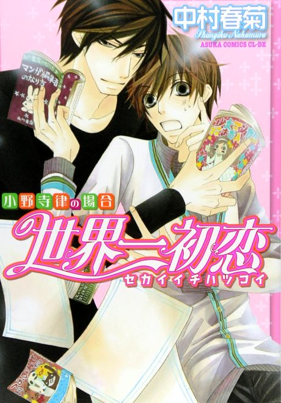
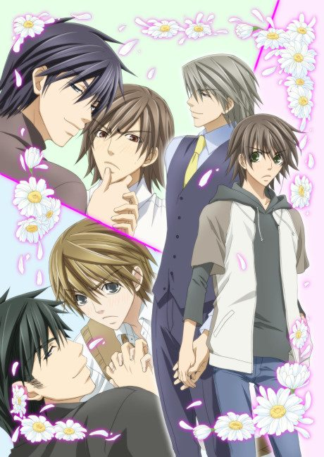
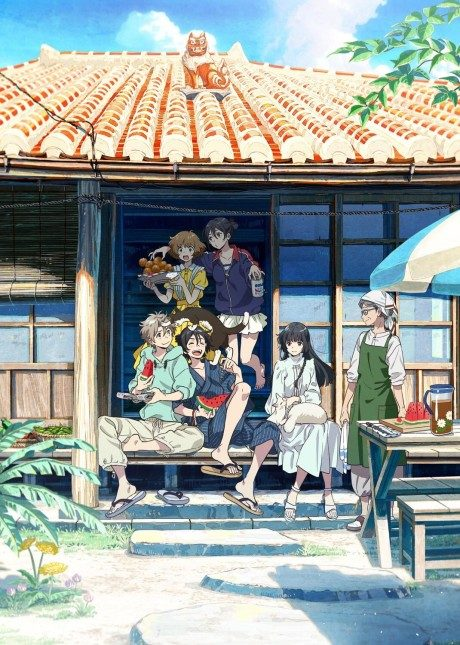
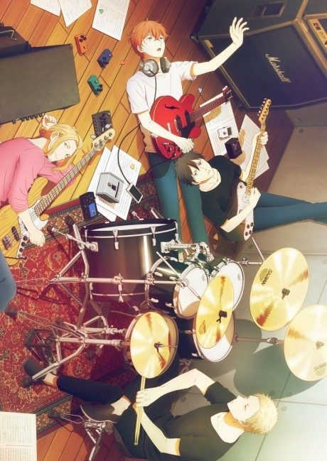
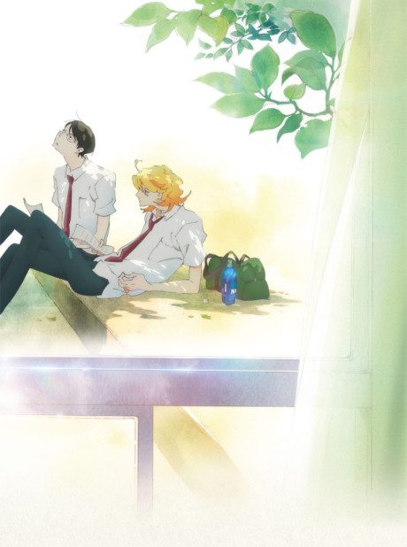
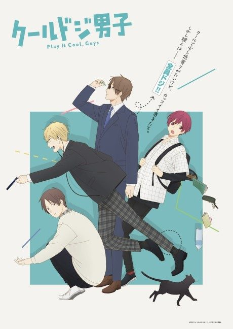
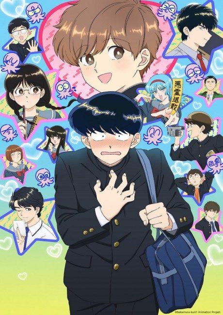
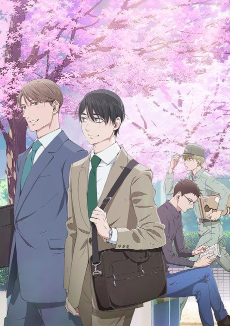

Sekai Ichi Hatsukoi - The World's Greatest First Love
世界一初恋 TV
Ritsu, a manga editor, discovers that his new boss is his first love from high school.
We haven't found where the anime ends in the manga yet.
7.0AniList score
—Animeter, no votes yet
24episodes, 2 seasons
Rate it or report where you stopped
2 seasons, 24 episodes
In airing order. Episode numbers on this site count straight through every season, so season 2 starts at episode 13.
1
2011 · TV
Sekai Ichi Hatsukoi - The World's Greatest First Love
Episodes1–1212 ep
2
2011 · TV
Sekai Ichi Hatsukoi - The World's Greatest First Love Season 2
Episodes13–2412 ep
Films, OVAs and specials
Not counted in the episode numbers above.
·
2020 · Film
Sekaiichi Hatsukoi: Propose-hen
Sources: AniList
More like Sekai Ichi Hatsukoi - The World's Greatest First Love

Manga Ch. 706.6
Film7.7
Manga Ch. 408.3
Film8.1 Manga Ch. 517.8
Manga Ch. 517.8

Manga Ch. 257.7 Manga Ch. 338.1
Manga Ch. 338.1

Unclear8.1 Manga Ch. 227.9
Manga Ch. 227.9
 Unclear7.6
Unclear7.6
 Manga Ch. 427.4
Manga Ch. 427.4

Manga Ch. 367.6